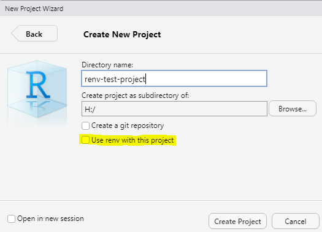
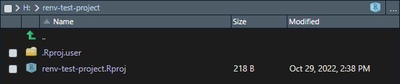
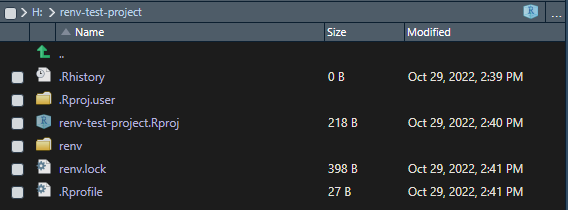
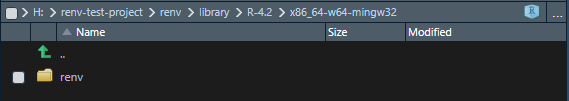
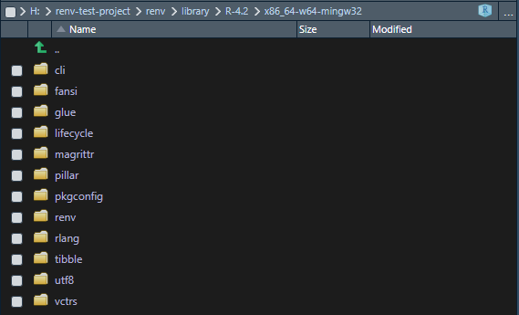
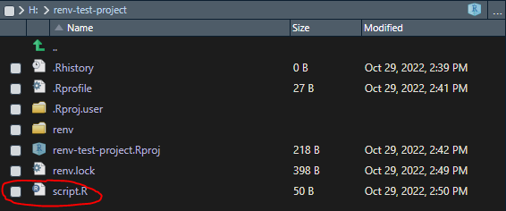
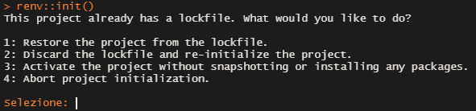

Dependency management with renv R package
Introduction
The renv package enables project-local dependency management to your RStudio projects, and is meant as a stable replacement for the older Packrat package. Basically, renv helps the user in making his projects and workflows consistent, robust, reproducible and portable, and ensures they keep working by managing library paths and isolating their dependencies. More easily, renv gives a private package library to each project. If you ever had troubles in figuring out what packages you need to install to make someone else’s code work, or some of your older projects stopped working after updating your global library, renv is the tool you need. For more details see renv webpage.
Installation
You can install the latest version from CRAN with:
install.packages("renv")Or the developer version from the R-universe:
install.packages("renv", repos = "https://rstudio.r-universe.dev")Example project
To show how renv actually works, we create a new RStudio project with File > New Project ... > New directory (see Figure 1).

As you can see, after installing renv, a dedicated tickbox is added to new projects windows. Clicking on it will automatically initialize renv when creating the project. Here we leave it unchecked, to show how to manually initialize the dependency management. We call the new project ‘renv-test-project’. Below you can see its main directory (Figure 2).

Since we initialized a blank project, we only have the project main file ‘renv-test-project.Rproj’, and user data inside the ‘.Rproj.user’ folder.
Initialize renv
To manually initialize a new project-local environment with a private library for our ‘renv-test-project’, we run:
renv::init()renv::init() scans the project and looks for dependencies in your code, then creates a private package library, and saves its state in a text file called ‘renv.lock’ (the file contains records of packages versions, external sources, if known, repositories, and a hash assigned to each package). It also writes out the infrastructure necessary to automatically load and use the private library for new R sessions launched from the project directory.

As you can see, some files and a folder were added to the project main directory (see Figure 3). ‘renv’ folder includes the private library, and part of the infrastructure we mentioned earlier. ‘renv.lock’ file is the most important part of renv dependency management; it can be used to restore a previous state of the project, or to reinitialize the private library from scratch (useful when sharing the project).
You can see the current project private library in renv/library/R-x.x/x86_64-w64mingw32 folder (Figure 4). Since our project is currently blank, only renv package itself was added to our library.

Update the private library
After initializing renv you can work in the project as you would normally do. You can write code and install and remove the necessary packages/dependencies.
When running renv the base install.packages() and remove.packages() functions are masked by their renv counterparts.
Let’s say for example we need tibble package for our analysis. First, we install it.
install.packages("tibble")tibble and all of its dependencies are added to our private library (Figure 5).

Then we write a simple script that uses tibble package. For example, the following script assigns mtcars R prebuilt dataset to a tibble object.
library(tibble)
tbl_mtcars <- as_tibble(mtcars)We save this script in our project main folder (Figure 6), but you can also place it in a dedicated subfolder, as you like.

Now, we run renv::snapshot() to add tibble package and its dependencies to our lockfile.
renv::snapshot()The function scans the whole project to find new dependencies, and detects our new script file where we called tibble package. After finding out the new dependencies, it updates the lockfile.
Restore a previous state
To restore a previous project state from the lockfile, you just need to run:
renv::restore()renv::init() can also restore a previous state. If a lockfile already exists, running renv::inits prompts some choices (see Figure 7).

Choice 1 is equivalent to renv::restore() . Choice 2 re-initializes the private library from scratch.